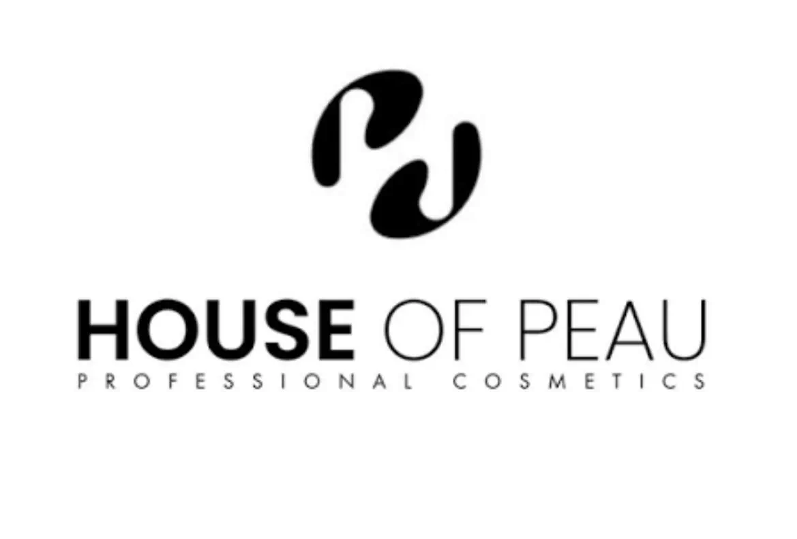

Institut de beauté à Woippy (57140), à deux pas de Metz, Terre Sereine est une maison de bien-être à taille humaine — un lieu où l'on prend le temps de comprendre votre peau, votre corps, vos besoins.
Terre Sereine est née d'un parcours profondément humain, guidé par la passion du soin, l'écoute du corps et la compréhension de la peau.
Derrière Terre Sereine, il y a une volonté sincère : accompagner chaque personne avec justesse, bienveillance et expertise, en prenant en compte son histoire, ses besoins et ses émotions.
Au fil des années, cette approche s'est construite autour d'une connaissance approfondie de la peau et de ses mécanismes, mais aussi d'une vision globale du bien-être. Ici, nous prenons soin de la personne dans sa globalité : de la tête et des cheveux, au visage, jusqu'au corps. Chaque zone est travaillée avec précision, dans le respect de son équilibre naturel.
Chaque soin est entièrement personnalisé, en fonction de la demande de la cliente, de ses attentes et de ce qu'elle souhaite profondément recevoir — que ce soit un besoin de résultats, de détente ou de reconnexion à soi.
Terre Sereine est ainsi devenu un lieu où l'on vient autant pour transformer sa peau que pour apaiser son esprit. Une expérience unique, où expertise et sensorialité se rencontrent dans une atmosphère douce et enveloppante.
Terre Sereine — Révéler votre beauté, rééquilibrer votre bien-être.


Dermalogica est une référence mondiale en matière de soins de la peau, reconnue pour son approche professionnelle et ses formulations hautement performantes. Chez Terre Sereine, chaque soin Dermalogica débute par une analyse approfondie de votre peau afin de cibler précisément ses besoins et d’y répondre avec des protocoles sur-mesure. L’efficacité des actifs, combinée à des gestuelles expertes, permet d’obtenir des résultats visibles et durables, tout en respectant l’équilibre naturel de la peau. Chaque traitement est conçu pour corriger, renforcer et révéler la qualité de votre peau. Au-delà du soin, c’est une prise en charge experte qui vise à transformer durablement votre peau.
BioSlimming propose une approche experte du soin du corps, axée sur le remodelage, la stimulation et le drainage. Chez Terre Sereine, ces soins sont intégrés dans une prise en charge globale visant à relancer les circulations, lisser les tissus et alléger le corps. Grâce à des techniques ciblées et des actifs spécifiques, les résultats sont visibles dès les premières séances, avec une sensation immédiate de légèreté. Chaque protocole est adapté à votre morphologie et à vos besoins du moment. Le corps est travaillé en profondeur pour libérer les tensions, affiner la silhouette et retrouver une sensation de confort durable.

House of Peau incarne une approche experte et globale du soin de la peau, où chaque protocole est pensé pour agir en profondeur, sur la peau comme sur le corps. Chez Terre Sereine, ces soins deviennent une véritable expérience sur-mesure : nous analysons votre peau avec précision, tout en travaillant sur les tensions du corps pour amplifier les résultats. L’alliance de techniques avancées, de gestuelles maîtrisées et d’une approche sensorielle permet d’obtenir une peau visiblement transformée, tout en procurant une sensation immédiate de légèreté. Chaque séance est unique. Elle s’adapte à votre peau, à votre état du moment, et à ce que votre corps exprime. Ici, le soin ne se limite pas à traiter, il rééquilibre, relâche et révèle.
Notre institut vous accueille à Woippy, à 5 minutes de Metz centre, pour un premier soin du visage, un massage signature ou simplement un échange. Le meilleur moyen de découvrir Terre Sereine, c'est d'en franchir le seuil.

Chez Terre Sereine, chaque soin est une invitation à relâcher les tensions, alléger le corps et révéler l'éclat de votre peau.
Prenez rendez-vous et offrez-vous une expérience où expertise et bien-être se rencontrent pour des résultats visibles et une sensation durable de légèreté.